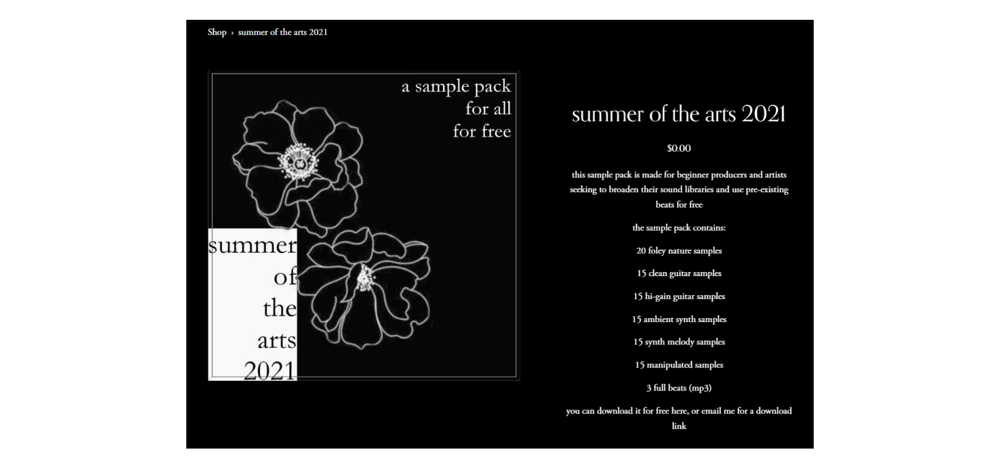
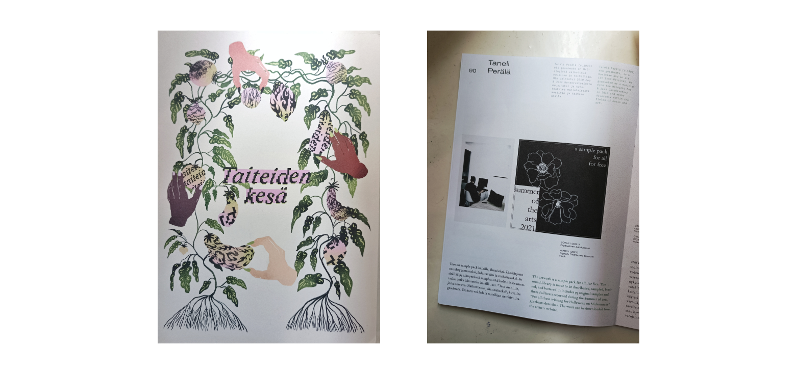
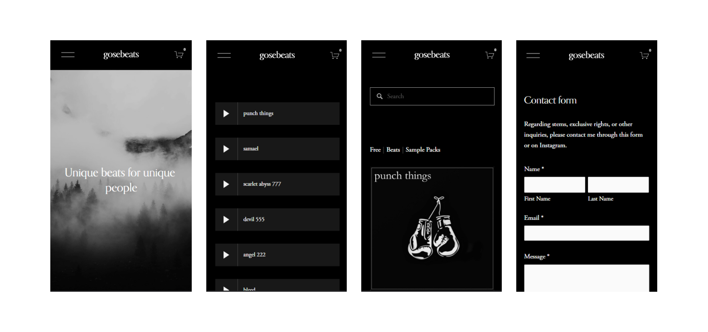
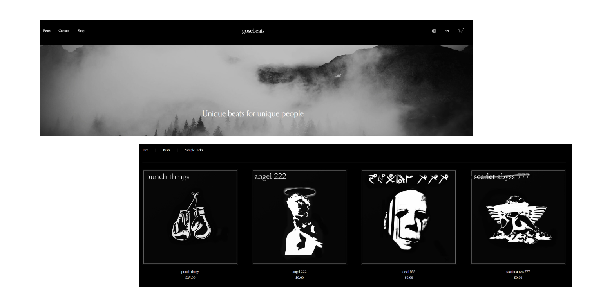
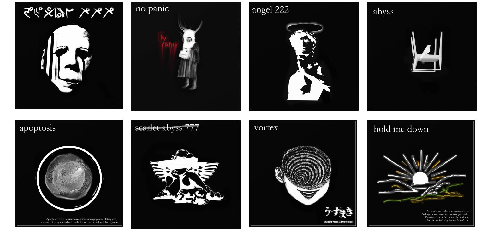

BUILDING A BRAND
Gosebeats is the pseudonym for my one man beat-making project. In October of 2020 I started to post my beats online with some crude graphics to go along with them, while selling my instrumentals on sites such as BeatStars. In 2021 I started to hone in my style of music, as well as how I wanted to present myself and my product. This manifested into a dark, moody aesthetic that pays homage to goth and emo culture, as well as the horror genre as a whole. During the same year, I got accepted into a new concept called Summer Of The Arts, which helped recently graduated artists execute projects during the summer of 2021.
SOTA21 - A SAMPLE PACK FOR ALL, FOR FREE
Summer Of The Arts was hosted by Kulttuuri- ja taidealan keskusjärjestö KULTA ry.
For my project, I developed a sample pack - SOTA21 - containing a wide range of samples recorded and produced by me.
The pack also includes three full beats/instrumentals made using samples from the pack.
I recorded the samples at my house, as well as outside in nature.
I used my skills as an instrument player as well as producer to produce as much variety in sound as I possibly could.

The idea of the sample pack was that it is distributed for free, and all sounds and beats within it can be used by anyone, anywhere, for free.
There are no copyrights associated with the sample pack.
I wanted upcoming artists and producers to have a another tool in their kit that they can utilize to make better music.
During the production of SOTA21 I had enough funding to open up a webshop for Gosebeats, which opened up an easier avenue for selling products and showcasing my work.
In 2022 the Summer Of The Arts project assembled all of the works done for the project into a published book.
All of the participants were given a copy, and extra were printed to be handed to other cultural associations in Finland.
A publication party was held in central Helsinki during the spring of 2022, wherein
The Board of the Student Union of the University of the Arts Helsinki and other representatives of art student organizations were invited along with all participants.

OPENING A WEBSHOP
I wanted the website to act both as a webshop as well as a portfolio, which is why I opted to the website builder Squarespace.
The website functions as a webshop (shop), portfolio (beats), and as a way to contact me (contact).
It was important to me that the website represents the aesthetic I'd been building on my Instagram page, but I also wanted to improve some things.
What came out is a modern, sleek website that is still very dark and broody. The web design was made with the artwork in mind to keep things cohesive.

The website is made to be responsive and easy to use.
Extra effort was put into having the artwork for instrumentals blend seamlessly into the background.
This was acheived by using different shades of black and white strokes within the artworks themselves.

MAKING BEATS IN ABLETON LIVE
Ableton Live 10 has been my DAW (Digital Audio Workstation) of choice for a few years now. I have some experience using Logic Pro in a studio setting, but for personal use I've always like Ableton Live the best. I take a lot of inspiration from trip-hop acts such as Portishead and Massive Attack among others. I use a combination of live instruments as well as VSTs to produce music. I use a pair of BeyerDynamic DT-770's and DT-990's to mix and master. Sometimes I use reference tracks while mixing/mastering, but mostly I like to hear my mixes on separate audio equipment. This way I can test out how the mixes work in different settings with different levels of equipment. I could talk about music production endlessly, so I'll just stop while I'm ahead. Instead, you can listen to some of my work within the Gosebeats realm below.
222
willful
samael
ARTWORK, AESTHETICS AND BRANDING
After trying out a few different styles of graphic design, I finally became comfortable with a specific black and white aesthetic.
I employ a deep black background with a white bevel on the inside, which encapsulates an image that corresponds to the instrumental in question.
The images have the name of the instrumental in them, which acts as a title in my webshops as well as my Instagram feed.
For some of the artwork I've added text or a dash of accent color, while still keeping everything streamlined and cohesive.

Regarding software, I've used a combination of
ArtRage for stencils and drawing as well as
GIMP for templates and photo editing.
As for hardware, I've used my Dell XPS 15 laptop's touch-screen for drawing, otherwise everything is completely digital.